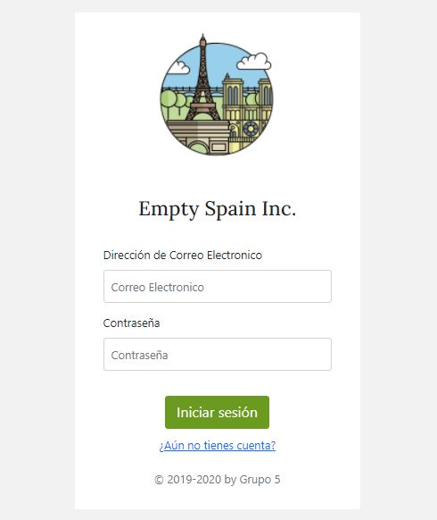
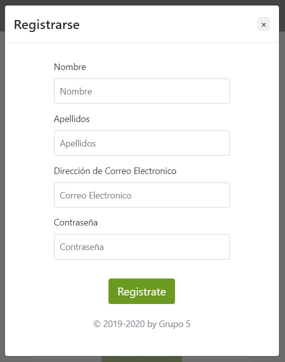

<div class="container">
  <div class="accordion my-5 pb-3" id="accordionPanelsStayOpenExample">
      <h1 class="mb-3">Preguntas Frecuentes</h1>
      <!-- ¿Cómo buscar un pueblo? -->
      <div class="accordion-item">
        <h2 class="accordion-header" id="panelsStayOpen-headingOne">
          <button class="accordion-button collapsed" type="button" data-bs-toggle="collapse" data-bs-target="#panelsStayOpen-collapseOne" aria-expanded="true" aria-controls="panelsStayOpen-collapseOne">
            ¿Cómo buscar un pueblo?
          </button>
        </h2>
        <div id="panelsStayOpen-collapseOne" class="accordion-collapse collapse" aria-labelledby="panelsStayOpen-headingOne"> <!-- class="show" -> muestra abierto -->
          <div class="accordion-body">
            <p>Para buscar un pueblo hay que introducir en la pestaña de <a routerLink="/pueblos">Pueblos</a> 
              el nombre del pueblo que se desee. Si el pueblo ha sido buscado este proceso no tardará nada, pero, si el pueblo no ha sido buscado por ningún usuario, 
              este proceso tardará unos segundos.</p>
          </div>
        </div>
      </div>
      <!-- ¿Cómo iniciar sesion? -->
      <div class="accordion-item">
          <h2 class="accordion-header" id="panelsStayOpen-headingTwo">
              <button class="accordion-button collapsed" type="button" data-bs-toggle="collapse" data-bs-target="#panelsStayOpen-collapseTwo" aria-expanded="false" aria-controls="panelsStayOpen-collapseTwo">
              ¿Cómo iniciar sesión?
              </button>
          </h2>
          <div id="panelsStayOpen-collapseTwo" class="accordion-collapse collapse" aria-labelledby="panelsStayOpen-headingTwo">
          <div class="accordion-body">
              <div>
                  <p>Para iniciar sesión, debes navegar hasta la pantalla de 
                      <a routerLink="/authentication">Login</a> a través del menú superior, una vez allí, debes introducir tus
                  datos de correo electrónico y contraseña con los que te registraste y hacer click en el botón "Iniciar
                  Sesión".</p>
                  
                  <div class="modal fade" id="loginModal" tabindex="-1" aria-labelledby="loginModalLabel" aria-hidden="true">
                  <div class="modal-dialog">
                      <div class="modal-content">
                      
                      </div>
                  </div>
                  </div>

                  <p>En el caso de que no se tenga una cuenta deberá crearse una haciendo click en el
                  enlace "¿Aún no tienes cuenta?" y completar los campos indicados en la pestaña emegrente, una vez
                  completados, debe hacer click en el botón "Registrate" o los cambios no quedarán registrados. </p>
                  
                  <div class="modal fade" id="registerModal" tabindex="-1" aria-labelledby="registerModalLabel" aria-hidden="true">
                      <div class="modal-dialog">
                          <div class="modal-content"> 
                      </div>
                  </div>
              </div>
          </div>
          </div>
      </div>
      <!-- Detalles de la informacion mostrada en el pueblo buscado -->
      <div class="accordion-item">
        <h2 class="accordion-header" id="panelsStayOpen-headingThree">
            <button class="accordion-button collapsed" type="button" data-bs-toggle="collapse" data-bs-target="#panelsStayOpen-collapseThree" aria-expanded="false" aria-controls="panelsStayOpen-collapseThree">
                Detalles de la información mostrada en el pueblo buscado        
            </button>
        </h2>
        <div id="panelsStayOpen-collapseThree" class="accordion-collapse collapse" aria-labelledby="panelsStayOpen-headingThree">
            <div class="accordion-body">
                <p>AÑADIR CUANDO SE CAMBIE "Detallados de pueblos"</p>
            </div>
        </div>
      </div>
      <div class="accordion-item">
        <h2 class="accordion-header" id="panelsStayOpen-headingFour">
            <button class="accordion-button collapsed" type="button" data-bs-toggle="collapse" data-bs-target="#panelsStayOpen-collapseFour" aria-expanded="false" aria-controls="panelsStayOpen-collapseFour">
            Análisis de sentimiento en twitter
            </button>
        </h2>
        <div id="panelsStayOpen-collapseFour" class="accordion-collapse collapse" aria-labelledby="panelsStayOpen-headingFour">
          <div class="accordion-body">
              <p>Todos los mensajes de Twitter han sido procesados para obtener un análisis del sentiemiento, esto indica si se transimite un mensaje positivo o negativo en función del contenido.</p>
              <p> Estos mensajes se traducen al analizarlos, por lo que el resultado no depende del idioma. Consideramos un mensaje <strong>positivo</strong> si el valor es superior a 0.3, <strong>neutro</strong> si se encuentra entre -0.3 y 0.3 y
              es un mensaje <strong>negativo</strong> si es inferior a -0.3, además representamos estos valores con distintos iconos de emociones: alegría, neutro y enfado. </p>
          </div>
        </div>
    </div>
    <!-- ¿Qué se muestra en el dashboard? -->
    <div class="accordion-item">
        <h2 class="accordion-header" id="panelsStayOpen-headingFive">
          <button class="accordion-button collapsed" type="button" data-bs-toggle="collapse" data-bs-target="#panelsStayOpen-collapseFive" aria-expanded="false" aria-controls="panelsStayOpen-collapseFive">
            ¿Qué se muestra en el dashboard?
          </button>
        </h2>
        <div id="panelsStayOpen-collapseFive" class="accordion-collapse collapse" aria-labelledby="panelsStayOpen-headingFive">
          <div class="accordion-body">
            <li> <strong>Cambiar pueblos recomendados en la pestaña busqueda:</strong> En la parte superior izquierda de la pantalla se puede ver una tabla compuesta por el <i>ID del municipio</i>, el <i>nombre</i> y el campo <i>destacado</i> . El funcionamiento de esta tabla permite seleccionar 4 pueblos destacados 
            para mostrarlos en la vista de "Pueblos". </li>
            <li> <strong>Representaciones gráficas:</strong> </li> 
            <li> <strong>Edición de datos de usuarios:</strong> Es posible editar los datos de los usuarios, tanto el nombre y apellios, correo electronico o como el rol, marcando con 1 que es un administrador, hay que seleccionar un usuario en la tabla haciendo doble click y editar los campos que se necesiten en la pestaña emergente, hay que confirmar los cambios pulsando "save"  </li> 
            <li> <strong>Llamada a los scrapers:</strong> </li> 
          </div>
        </div>
    </div>
    <!-- Fin -->
  </div>
</div>